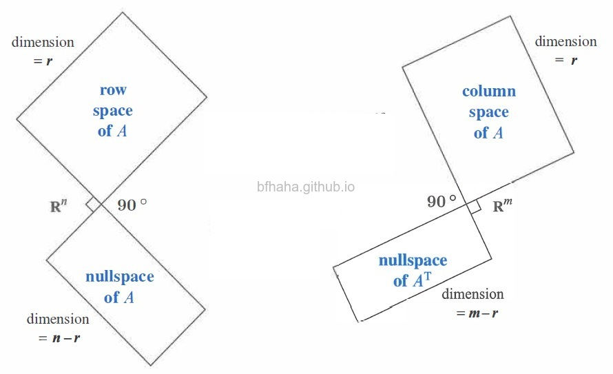
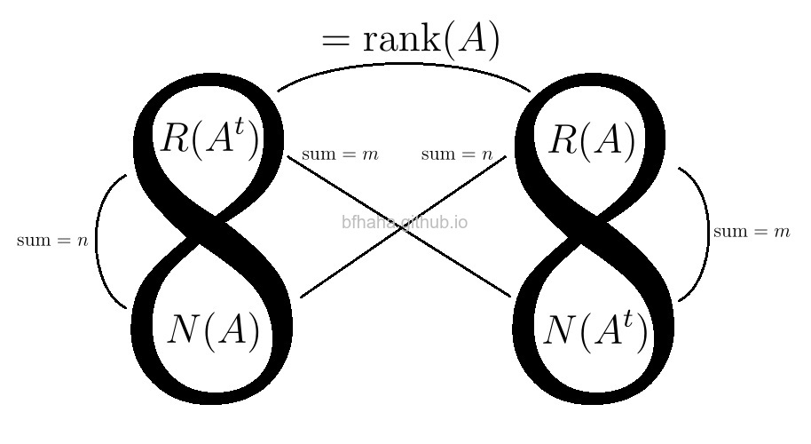
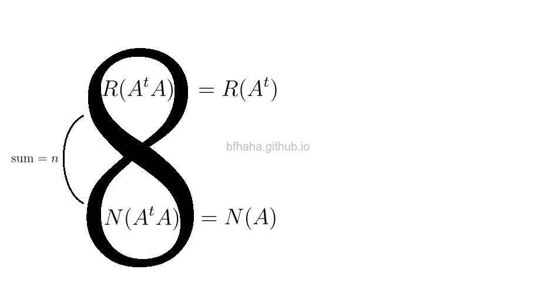

下圖是Strang給的Big Picture of Linear Algebra，既然敢叫Big Picture，必定是有它厲害的地方，不過Strang並沒有說得很清楚，本文說明這張圖為什麼很重要。
不過因為這張圖有稜有角不好畫，所以我都會快速畫兩個8，如下圖。

說明一下縮寫表示的意思
CS表示column space
RS表示row space
R表示range
N表示nullspace
注意到\(CS(A)=R(A)\), \(RS(A)=CS(A^t)\)。
圖形中為了避免出現太多不同的符號，所以不寫CS跟RS，只用R跟N來表示這些空間。
證明垂直的時候，比較偏好使用CS跟RS。
證明維度的時候，比較偏好使用R。
\(RS(A)\perp N(A)\)
\(CS(A)\perp N(A^t)\)
Proof: Let \(\mathbf{v}\) be a vector in \(N(A)\) and \(\mathbf{r}\) be a row of \(A\). Then \(\langle \mathbf{r}, \mathbf{v}\rangle=0\) by the definition of multiplication and \(A\mathbf{v}=\mathbf{0}\). The second part follows immediately from considering the transpose of \(A\) in the first part and the row space of \(A^t\) is the same as the column space of \(A\).
\(RS(A)^{\perp}=N(A)\)
\(CS(A)^{\perp}=N(A^t)\)
Let \(A\) be a \(m\times n\) matrix. We can view \(A\) as a linear transformation \(A:F^n\to F^m\) defined by \(A(\mathbf{v})=A\mathbf{v}\).
We can also view \(A^t\) as a linear transformation \(A^t:F^m\to F^n\) defined by \(A^t(\mathbf{w})=A^t\mathbf{w}\).
By the dimension theorem,
\(n=\text{nullity}(A)+\text{rank}(A)=\dim{N(A)}+\dim{R(A)}\)
\(m=\text{nullity}(A^t)+\text{rank}(A^t)=\dim{N(A^t)}+\dim{R(A^t)}\)
Since \(\text{rank}(A)=\text{rank}(A^t)\), the following identities follows immediately from the above ones.
\(n=\text{nullity}(A)+\text{rank}(A^t)=\dim{N(A)}+\dim{R(A^t)}\)
\(m=\text{nullity}(A^t)+\text{rank}(A)=\dim{N(A^t)}+\dim{R(A)}\)
\(N(A^t A)=N(A)\)
Proof: (\(\supseteq\)) is trivial. We show the other direction (\(\subseteq\)) \[\begin{array}{ll} & \mathbf{v}\in N(A^t A) \\ \Rightarrow & A^t A\mathbf{v}=\mathbf{0} \\ \Rightarrow & \mathbf{v}^t A^t A \mathbf{v}=\mathbf{0} \\ \Rightarrow & (A\mathbf{v})^t (A \mathbf{v})=\mathbf{0} \\ \Rightarrow & A\mathbf{v}=\mathbf{0} \\ \Rightarrow & A\mathbf{v}\in N(A) \end{array}\]
\(R(A^t)=R(A^t A)\)
Proof: (\(\supseteq\)) is trivial. We show the other direction (\(\subseteq\)) \[\begin{array}{lll} \dim{R(A^t A)} & = & n-\dim{N(A^t A)} \\ & = & n-\dim{N(A)} \\ & = & \dim{R(A)} \\ & = & \dim{R(A^t)} \end{array}\] Since \(R(A^t A)\) is a subspace of \(R(A^t)\) and they have the same dimension, they are identical.
Remark: This is a key step of finding the least square solution or orthogonal projection.
Proof: Let \(A\) be a \(m\times n\) matrix. \[\begin{array}{cl} & \text{columns of }A \text{ are linear independent} \\ \Rightarrow & \text{rank}(A)=n \\ \stackrel{R(A^t A)=R(A)}{\Rightarrow} & \text{rank}(A^t A)=\text{rank}(A)=n \\ \stackrel{A^t A\text{ is }n\times n}{\Rightarrow} & A^t A\text{ is invertible} \end{array}\]
當我們考慮\(A^t A\)的時候，左右兩個圖會是相同的而併在一起。
